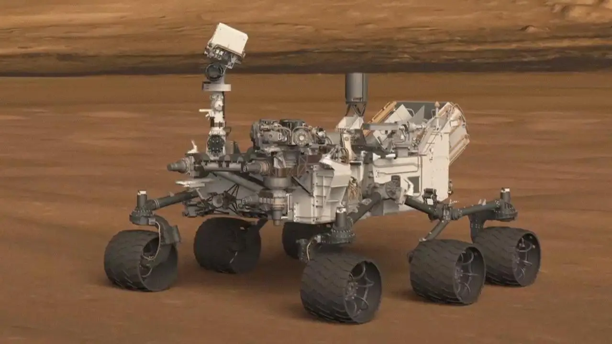

For decades, NASA has sent robotic explorers to Mars to uncover its climatic and geologic history, and to determine if the planet ever hosted life. Discover two of the most advanced rovers ever built.
Mission Profiles: Curiosity and Perseverance
Curiosity

Curiosity
Mission Goals & Overview
Curiosity's primary mission is to determine if Mars ever had the proper environmental conditions to support small life forms called microbes.
Launch & Landing
Launched: November 26, 2011
Landed: August 5, 2012 (Gale Crater)
Major Discoveries
Curiosity discovered that ancient Mars had the right chemistry to support living microbes, finding sulfur, nitrogen, oxygen, phosphorus, and carbon—key ingredients necessary for life.
Key Technical Features
The rover is equipped with a radioisotope power system and advanced instruments like the ChemCam, which fires a laser to analyze the composition of vaporized rocks.
Perseverance is searching for signs of ancient microbial life and is the first mission to collect and cache Martian rock and regolith for future return to Earth.
Launch & Landing
Launched: July 30, 2020
Landed: February 18, 2021 (Jezero Crater)
Major Discoveries
Perseverance successfully generated oxygen from the Martian atmosphere using the MOXIE instrument and deployed Ingenuity, the first helicopter to fly on another planet.
Key Technical Features
It features an advanced sample-caching system, specialized cameras for autonomous driving, and microphones that recorded the first audio ever heard from the surface of Mars.